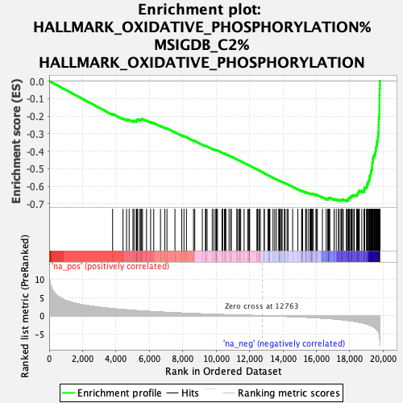

| | | Dataset | expr_RNAseq_ranks |
| Phenotype | NoPhenotypeAvailable |
| Upregulated in class | na_neg |
| GeneSet | HALLMARK_OXIDATIVE_PHOSPHORYLATION%MSIGDB_C2%HALLMARK_OXIDATIVE_PHOSPHORYLATION |
| Enrichment Score (ES) | -0.6852279 |
| Normalized Enrichment Score (NES) | NaN |
| Nominal p-value | NaN |
| FDR q-value | 1.0 |
| FWER p-Value | 0.0 |
Table: GSEA Results Summary

Fig 1: Enrichment plot: HALLMARK_OXIDATIVE_PHOSPHORYLATION%MSIGDB_C2%HALLMARK_OXIDATIVE_PHOSPHORYLATION
Profile of the Running ES Score & Positions of GeneSet Members on the Rank Ordered List
| PROBE | GENE SYMBOL | GENE_TITLE | RANK IN GENE LIST | RANK METRIC SCORE | RUNNING ES | CORE ENRICHMENT | | 1 | PMPCA | | | 3800 | 1.944 | -0.1873 | No |
| 2 | RETSAT | | | 4422 | 1.682 | -0.2134 | No |
| 3 | ACO2 | | | 4635 | 1.600 | -0.2189 | No |
| 4 | POR | | | 4790 | 1.549 | -0.2216 | No |
| 5 | RHOT2 | | | 5017 | 1.466 | -0.2283 | No |
| 6 | ATP6AP1 | | | 5083 | 1.443 | -0.2268 | No |
| 7 | NDUFS2 | | | 5212 | 1.399 | -0.2287 | No |
| 8 | SLC25A12 | | | 5246 | 1.385 | -0.2258 | No |
| 9 | SDHA | | | 5248 | 1.385 | -0.2213 | No |
| 10 | BAX | | | 5287 | 1.376 | -0.2187 | No |
| 11 | UQCRC1 | | | 5397 | 1.343 | -0.2198 | No |
| 12 | HADHA | | | 5481 | 1.316 | -0.2197 | No |
| 13 | SDHC | | | 5537 | 1.305 | -0.2182 | No |
| 14 | AFG3L2 | | | 5591 | 1.288 | -0.2166 | No |
| 15 | DLST | | | 5831 | 1.213 | -0.2248 | No |
| 16 | SLC25A6 | | | 6077 | 1.145 | -0.2335 | No |
| 17 | ATP5A1 | | | 6262 | 1.095 | -0.2393 | No |
| 18 | TCIRG1 | | | 6667 | 0.997 | -0.2566 | No |
| 19 | NDUFV1 | | | 6925 | 0.937 | -0.2666 | No |
| 20 | PDHA1 | | | 7054 | 0.910 | -0.2701 | No |
| 21 | IDH3A | | | 7534 | 0.801 | -0.2918 | No |
| 22 | IDH2 | | | 7942 | 0.712 | -0.3102 | No |
| 23 | MRPS30 | | | 8074 | 0.684 | -0.3147 | No |
| 24 | GPI | | | 8223 | 0.654 | -0.3200 | No |
| 25 | SLC25A4 | | | 8646 | 0.573 | -0.3397 | No |
| 26 | ECHS1 | | | 8721 | 0.559 | -0.3416 | No |
| 27 | ATP5B | | | 9173 | 0.477 | -0.3630 | No |
| 28 | MTRF1 | | | 9358 | 0.444 | -0.3709 | No |
| 29 | ALDH6A1 | | | 9391 | 0.438 | -0.3711 | No |
| 30 | CYB5R3 | | | 9459 | 0.429 | -0.3731 | No |
| 31 | NNT | | | 9767 | 0.382 | -0.3875 | No |
| 32 | ETFDH | | | 9867 | 0.366 | -0.3913 | No |
| 33 | SLC25A11 | | | 9987 | 0.349 | -0.3962 | No |
| 34 | SUPV3L1 | | | 9992 | 0.348 | -0.3953 | No |
| 35 | MAOB | | | 10005 | 0.346 | -0.3947 | No |
| 36 | ECH1 | | | 10033 | 0.342 | -0.3950 | No |
| 37 | IDH3B | | | 10081 | 0.334 | -0.3963 | No |
| 38 | IMMT | | | 10353 | 0.294 | -0.4091 | No |
| 39 | IDH3G | | | 10393 | 0.288 | -0.4101 | No |
| 40 | ACAT1 | | | 10499 | 0.274 | -0.4146 | No |
| 41 | SUCLG1 | | | 10543 | 0.268 | -0.4159 | No |
| 42 | NDUFB5 | | | 10583 | 0.263 | -0.4170 | No |
| 43 | MTRR | | | 10771 | 0.239 | -0.4258 | No |
| 44 | ABCB7 | | | 10873 | 0.223 | -0.4302 | No |
| 45 | PDK4 | | | 10908 | 0.220 | -0.4312 | No |
| 46 | MDH2 | | | 11236 | 0.177 | -0.4473 | No |
| 47 | HTRA2 | | | 11286 | 0.171 | -0.4492 | No |
| 48 | ACAA1 | | | 11378 | 0.160 | -0.4533 | No |
| 49 | SDHD | | | 11407 | 0.157 | -0.4542 | No |
| 50 | SLC25A20 | | | 11472 | 0.148 | -0.4570 | No |
| 51 | MRPS12 | | | 11676 | 0.118 | -0.4669 | No |
| 52 | NDUFS7 | | | 11888 | 0.094 | -0.4774 | No |
| 53 | MFN2 | | | 11959 | 0.082 | -0.4807 | No |
| 54 | NDUFA7 | | | 11987 | 0.077 | -0.4818 | No |
| 55 | OGDH | | | 11998 | 0.076 | -0.4821 | No |
| 56 | HADHB | | | 12007 | 0.075 | -0.4822 | No |
| 57 | TIMM50 | | | 12442 | 0.030 | -0.5042 | No |
| 58 | PDHB | | | 12475 | 0.026 | -0.5058 | No |
| 59 | GOT2 | | | 12558 | 0.020 | -0.5099 | No |
| 60 | ETFB | | | 12588 | 0.017 | -0.5113 | No |
| 61 | PHB2 | | | 12645 | 0.012 | -0.5141 | No |
| 62 | SUCLA2 | | | 12876 | -0.013 | -0.5258 | No |
| 63 | ALAS1 | | | 12884 | -0.014 | -0.5261 | No |
| 64 | NDUFS1 | | | 13098 | -0.038 | -0.5369 | No |
| 65 | CPT1A | | | 13151 | -0.044 | -0.5394 | No |
| 66 | MRPL11 | | | 13196 | -0.047 | -0.5415 | No |
| 67 | ACAA2 | | | 13219 | -0.051 | -0.5424 | No |
| 68 | TOMM22 | | | 13406 | -0.072 | -0.5517 | No |
| 69 | MRPL15 | | | 13509 | -0.084 | -0.5566 | No |
| 70 | UQCRFS1 | | | 13606 | -0.095 | -0.5612 | No |
| 71 | AIFM1 | | | 13748 | -0.114 | -0.5680 | No |
| 72 | NDUFV2 | | | 13772 | -0.117 | -0.5688 | No |
| 73 | FXN | | | 13798 | -0.121 | -0.5696 | No |
| 74 | LDHB | | | 13837 | -0.127 | -0.5711 | No |
| 75 | COX15 | | | 13849 | -0.129 | -0.5713 | No |
| 76 | VDAC2 | | | 13932 | -0.141 | -0.5750 | No |
| 77 | HSD17B10 | | | 13952 | -0.143 | -0.5755 | No |
| 78 | ACADVL | | | 14092 | -0.163 | -0.5820 | No |
| 79 | PHYH | | | 14110 | -0.165 | -0.5824 | No |
| 80 | SLC25A5 | | | 14127 | -0.169 | -0.5826 | No |
| 81 | ISCA1 | | | 14247 | -0.186 | -0.5881 | No |
| 82 | NDUFA9 | | | 14309 | -0.197 | -0.5905 | No |
| 83 | ACADM | | | 14583 | -0.245 | -0.6036 | No |
| 84 | OXA1L | | | 14894 | -0.302 | -0.6184 | No |
| 85 | NDUFB8 | | | 15125 | -0.345 | -0.6290 | No |
| 86 | MTX2 | | | 15128 | -0.346 | -0.6280 | No |
| 87 | COX6C | | | 15137 | -0.347 | -0.6272 | No |
| 88 | MRPS11 | | | 15183 | -0.356 | -0.6284 | No |
| 89 | OAT | | | 15358 | -0.394 | -0.6359 | No |
| 90 | NDUFS3 | | | 15384 | -0.399 | -0.6359 | No |
| 91 | ATP6V1H | | | 15399 | -0.402 | -0.6353 | No |
| 92 | PRDX3 | | | 15512 | -0.432 | -0.6395 | No |
| 93 | NDUFS8 | | | 15615 | -0.457 | -0.6432 | No |
| 94 | COX7A2L | | | 15664 | -0.467 | -0.6441 | No |
| 95 | DLAT | | | 15691 | -0.473 | -0.6439 | No |
| 96 | ATP6V0B | | | 15701 | -0.476 | -0.6428 | No |
| 97 | PDHX | | | 15727 | -0.481 | -0.6425 | No |
| 98 | NQO2 | | | 15748 | -0.485 | -0.6419 | No |
| 99 | ATP1B1 | | | 15814 | -0.503 | -0.6435 | No |
| 100 | ETFA | | | 15975 | -0.544 | -0.6499 | No |
| 101 | COX10 | | | 16017 | -0.557 | -0.6501 | No |
| 102 | CASP7 | | | 16061 | -0.569 | -0.6504 | No |
| 103 | UQCRC2 | | | 16364 | -0.656 | -0.6637 | No |
| 104 | SLC25A3 | | | 16590 | -0.730 | -0.6727 | No |
| 105 | COX11 | | | 16683 | -0.759 | -0.6749 | No |
| 106 | NDUFC2 | | | 16718 | -0.766 | -0.6741 | No |
| 107 | VDAC3 | | | 16732 | -0.772 | -0.6722 | No |
| 108 | CS | | | 16740 | -0.775 | -0.6700 | No |
| 109 | BDH2 | | | 16750 | -0.780 | -0.6679 | No |
| 110 | LDHA | | | 16751 | -0.780 | -0.6653 | No |
| 111 | HSPA9 | | | 16810 | -0.799 | -0.6656 | No |
| 112 | COX6A1 | | | 17063 | -0.886 | -0.6755 | No |
| 113 | UQCR11 | | | 17068 | -0.886 | -0.6728 | No |
| 114 | TIMM13 | | | 17192 | -0.941 | -0.6760 | No |
| 115 | COX4I1 | | | 17325 | -0.996 | -0.6794 | No |
| 116 | GLUD1 | | | 17364 | -1.012 | -0.6780 | No |
| 117 | VDAC1 | | | 17477 | -1.065 | -0.6802 | No |
| 118 | NDUFS6 | | | 17492 | -1.073 | -0.6773 | No |
| 119 | ACADSB | | | 17562 | -1.106 | -0.6772 | No |
| 120 | ATP6V1G1 | | | 17617 | -1.136 | -0.6762 | No |
| 121 | MRPL34 | | | 17795 | -1.226 | -0.6812 | Yes |
| 122 | NDUFA5 | | | 17851 | -1.264 | -0.6798 | Yes |
| 123 | CYC1 | | | 17904 | -1.294 | -0.6782 | Yes |
| 124 | GPX4 | | | 17928 | -1.306 | -0.6750 | Yes |
| 125 | TIMM17A | | | 17935 | -1.311 | -0.6710 | Yes |
| 126 | PDP1 | | | 17946 | -1.319 | -0.6671 | Yes |
| 127 | FH | | | 17984 | -1.343 | -0.6646 | Yes |
| 128 | IDH1 | | | 18062 | -1.385 | -0.6639 | Yes |
| 129 | NDUFB7 | | | 18074 | -1.394 | -0.6599 | Yes |
| 130 | MRPS15 | | | 18110 | -1.421 | -0.6570 | Yes |
| 131 | ISCU | | | 18131 | -1.437 | -0.6532 | Yes |
| 132 | MRPS22 | | | 18198 | -1.481 | -0.6517 | Yes |
| 133 | COX5A | | | 18271 | -1.524 | -0.6503 | Yes |
| 134 | DLD | | | 18412 | -1.635 | -0.6521 | Yes |
| 135 | ATP5F1 | | | 18438 | -1.661 | -0.6479 | Yes |
| 136 | ATP5G3 | | | 18473 | -1.702 | -0.6440 | Yes |
| 137 | TIMM9 | | | 18485 | -1.709 | -0.6389 | Yes |
| 138 | LRPPRC | | | 18515 | -1.734 | -0.6346 | Yes |
| 139 | SURF1 | | | 18558 | -1.773 | -0.6309 | Yes |
| 140 | MGST3 | | | 18575 | -1.784 | -0.6258 | Yes |
| 141 | RHOT1 | | | 18724 | -1.933 | -0.6270 | Yes |
| 142 | ATP5G2 | | | 18867 | -2.091 | -0.6273 | Yes |
| 143 | HCCS | | | 18870 | -2.099 | -0.6205 | Yes |
| 144 | ECI1 | | | 18890 | -2.123 | -0.6144 | Yes |
| 145 | MDH1 | | | 18892 | -2.128 | -0.6074 | Yes |
| 146 | ATP6V1F | | | 19006 | -2.283 | -0.6056 | Yes |
| 147 | ATP5D | | | 19029 | -2.316 | -0.5991 | Yes |
| 148 | POLR2F | | | 19054 | -2.353 | -0.5925 | Yes |
| 149 | CYCS | | | 19056 | -2.357 | -0.5848 | Yes |
| 150 | ATP6V1C1 | | | 19113 | -2.439 | -0.5796 | Yes |
| 151 | ATP6V1E1 | | | 19115 | -2.441 | -0.5716 | Yes |
| 152 | TOMM70A | | | 19155 | -2.517 | -0.5652 | Yes |
| 153 | FDX1 | | | 19181 | -2.566 | -0.5580 | Yes |
| 154 | ATP6V1D | | | 19188 | -2.581 | -0.5498 | Yes |
| 155 | GRPEL1 | | | 19194 | -2.594 | -0.5415 | Yes |
| 156 | NDUFB2 | | | 19246 | -2.686 | -0.5352 | Yes |
| 157 | OPA1 | | | 19261 | -2.714 | -0.5269 | Yes |
| 158 | COX5B | | | 19275 | -2.755 | -0.5185 | Yes |
| 159 | MRPL35 | | | 19286 | -2.775 | -0.5098 | Yes |
| 160 | NDUFB6 | | | 19322 | -2.835 | -0.5022 | Yes |
| 161 | DECR1 | | | 19341 | -2.868 | -0.4937 | Yes |
| 162 | NDUFA8 | | | 19346 | -2.876 | -0.4844 | Yes |
| 163 | NDUFA2 | | | 19348 | -2.876 | -0.4749 | Yes |
| 164 | NDUFC1 | | | 19354 | -2.891 | -0.4656 | Yes |
| 165 | ATP5L | | | 19384 | -2.966 | -0.4573 | Yes |
| 166 | ATP5G1 | | | 19387 | -2.982 | -0.4475 | Yes |
| 167 | CYB5A | | | 19404 | -3.019 | -0.4384 | Yes |
| 168 | ATP6V0E1 | | | 19420 | -3.079 | -0.4289 | Yes |
| 169 | UQCRH | | | 19479 | -3.242 | -0.4212 | Yes |
| 170 | SDHB | | | 19522 | -3.384 | -0.4121 | Yes |
| 171 | NDUFAB1 | | | 19541 | -3.471 | -0.4016 | Yes |
| 172 | TIMM10 | | | 19560 | -3.521 | -0.3909 | Yes |
| 173 | ATP5C1 | | | 19562 | -3.529 | -0.3792 | Yes |
| 174 | NDUFB1 | | | 19603 | -3.719 | -0.3690 | Yes |
| 175 | ATP5O | | | 19619 | -3.810 | -0.3572 | Yes |
| 176 | ATP5E | | | 19638 | -3.942 | -0.3450 | Yes |
| 177 | ATP5J2 | | | 19679 | -4.150 | -0.3334 | Yes |
| 178 | ATP5I | | | 19685 | -4.207 | -0.3197 | Yes |
| 179 | ATP5H | | | 19699 | -4.295 | -0.3062 | Yes |
| 180 | NDUFA6 | | | 19705 | -4.348 | -0.2921 | Yes |
| 181 | NDUFA4 | | | 19728 | -4.485 | -0.2783 | Yes |
| 182 | MPC1 | | | 19729 | -4.486 | -0.2635 | Yes |
| 183 | COX8A | | | 19734 | -4.515 | -0.2488 | Yes |
| 184 | TIMM8B | | | 19737 | -4.617 | -0.2336 | Yes |
| 185 | UQCR10 | | | 19739 | -4.628 | -0.2184 | Yes |
| 186 | NDUFB4 | | | 19750 | -4.777 | -0.2031 | Yes |
| 187 | ATP5J | | | 19773 | -5.157 | -0.1872 | Yes |
| 188 | COX17 | | | 19775 | -5.269 | -0.1698 | Yes |
| 189 | NDUFA1 | | | 19777 | -5.322 | -0.1523 | Yes |
| 190 | COX6B1 | | | 19778 | -5.340 | -0.1346 | Yes |
| 191 | NDUFS4 | | | 19779 | -5.367 | -0.1169 | Yes |
| 192 | COX7C | | | 19780 | -5.372 | -0.0991 | Yes |
| 193 | COX7A2 | | | 19783 | -5.397 | -0.0814 | Yes |
| 194 | UQCRB | | | 19792 | -5.652 | -0.0631 | Yes |
| 195 | UQCRQ | | | 19795 | -5.813 | -0.0440 | Yes |
| 196 | NDUFB3 | | | 19806 | -6.693 | -0.0223 | Yes |
| 197 | COX7B | | | 19810 | -6.867 | 0.0002 | Yes |
Table: GSEA details [plain text format]
Fig 2: HALLMARK_OXIDATIVE_PHOSPHORYLATION%MSIGDB_C2%HALLMARK_OXIDATIVE_PHOSPHORYLATION: Random ES distribution
Gene set null distribution of ES for HALLMARK_OXIDATIVE_PHOSPHORYLATION%MSIGDB_C2%HALLMARK_OXIDATIVE_PHOSPHORYLATION